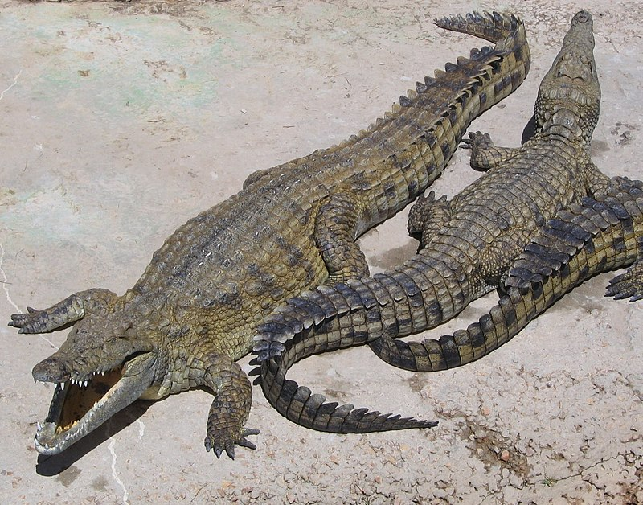

Cocodrilo
Crocodylidae (castellanizado como crocodílidos1o cocodrílidos) es una familia de saurópsidos, arcosaurios comúnmente conocidos como cocodrilos. Incluye a catorce especies actuales. Se trata de grandes reptiles semiacuáticos que viven en las regiones tropicales de África, Asia, América y Australia. Aparecieron por primera vez durante el Eoceno, hace unos cincuenta y cinco millones de años.
En sentido estricto, un cocodrilo es cualquier especie que pertenece a la familia Crocodylidae (a veces clasificada como la subfamilia Crocodylinae). No obstante, el término también se puede usar de manera más flexible para incluir todos los miembros existentes de la orden Crocodilia, es decir, los verdaderos cocodrilos, los aligatores y caimanes (familia Alligatoridae) y los gaviales (familia Gavialidae), así como los Crocodylomorpha, que incluye parientes y antepasados extintos de los cocodrilos actuales.
Los cocodrilos tienden a congregarse en hábitats de agua dulce como ríos, lagos, humedales y algunas veces en agua salobre. Se alimentan principalmente de vertebrados (peces, reptiles y mamíferos), y algunas veces de invertebrados (moluscos y crustáceos), según la especie.
Tamaño
Una especie, el cocodrilo marino (Crocodylus porosus), es el mayor de los cocodrilos de la actualidad (el más grande del que se tiene noticia medía 8,5 m y pesaba 1700 kg, y fue capturado en Queensland (Australia) en 1957). Le sigue en tamaño el cocodrilo del Nilo (Crocodylus niloticus), con ejemplares que sobrepasan los 6 m y casi 750 kg de peso.
Ecología
Su piel es escamosa, dura y seca. Llegan a vivir de cincuenta a ochenta años.
Son reptiles que viven en las áreas tropicales de África, Asia, América y Australia. Son excelentes nadadores gracias a que tienen piel entre los dedos de las patas traseras para ayudarlos a nadar con mayor rapidez, su apariencia es parecida a la de las aletas de buceo. Suelen vivir en ríos de corriente lenta y se alimentan de una amplia variedad de animales, preferentemente vivos.
El cocodrilo marino (Crocodylus porosus) vive tanto en agua dulce como en estuarios salados y se adentra con frecuencia en el mar, lo que le ha permitido colonizar muchas islas de Australia y todas las costas desde la India hasta Australia, e incluso, en muchas ocasiones llega a cruzar el océano Índico y llega hasta África Oriental, desde Somalia hasta Madagascar y Sudáfrica. El cocodrilo marino no es el único en adentrarse en el mar, aunque sí el que lo hace con más frecuencia. Así, el cocodrilo del Nilo (Crocodylus niloticus) ha cruzado el mar para colonizar varias islas del océano Índico (entre ellas Madagascar); y el cocodrilo americano (Crocodylus acutus) ha llegado a nado hasta la mayoría de las islas del Caribe, e incluso a la punta sur de Florida. Los mayores son el marino, el del Nilo y el del Orinoco (Crocodylus intermedius).
Los cocodrilos jóvenes se alimentan de cangrejos, insectos y ranas. Los mayores cazan peces, se alimentan de animales muertos o permanecen en espera durante horas, listos para engullir presas como mamíferos y aves acuáticas. Aferran a la presa con mandíbulas poderosas y dientes filosos, arrastrándola debajo del agua hasta ahogarla. Los cocodrilos no pueden masticar, de modo que cortan a la presa, sacudiéndola y despedazándola con sus dientes. Nuevos dientes crecen para reemplazar los que se rompen o se pierden. Su mordedura es la más poderosa de todo el Reino Animal, de unos 1800 N.
Los cocodrilos llevan vidas bastante inactivas, ya que yacen inmóviles la mayor parte del día. Por la mañana los ríos se calientan lentamente y los cocodrilos a menudo buscan el calor del sol en la orilla. Por la noche el agua se enfría lentamente, de modo que los cocodrilos pasan estas horas dentro del río para mantenerse en calor.
Los cocodrilos no pueden controlar su temperatura corporal por lo que suelen abrir la mandíbula para liberar calor o quedarse bajo el sol para calentarse cuando les da frío. En la boca los vasos sanguíneos están cerca de la superficie de la piel, permitiendo que el calor pase rápidamente hacia o desde la sangre al ambiente.
Los cocodrilos tienen cuerpos pesados y metabolismos generalmente lentos, aunque pueden controlar la velocidad de su digestión según la abundancia de presas y de la temperatura ambiente; así, con una temperatura óptima (40-50 ºC) pueden hacer una digestión rápida si abundan las presas o lenta si estas escasean (estos últimos datos fueron probados científicamente hace muy poco). Están bien adaptados a la vida acuática y solo de vez en cuando salen de ella, como el gavial del Ganges (Gavialis gangeticus). Sobre la tierra, los cocodrilos se deslizan arrastrando su estómago y empujándose con los pies. Para recorrer distancias grandes, adoptan un "paso alto", levantando el cuerpo del suelo y arrastrando la cola. Los cocodrilos, además, pueden "galopar" a una velocidad máxima de 18 km/h.
Las fosas nasales de un cocodrílido y sus ojos se encuentran en la parte superior de la cabeza, lo que le permite ver y respirar mientras permanece en el agua. Puede respirar parcialmente sumergido, cerrando un pliegue de la garganta que evita que el agua penetre en los pulmones. Bajo el agua, las fosas nasales y los oídos se cierran, y en sus ojos una membrana transparente se mueve en sentido transversal actuando como un tercer párpado.
Fisiología
La fecundación es interna. Son ovíparos: ponen huevos en nidos que construyen con palos y ramas aunque estos solo son la parte superior pues los huevos están enterrados. A veces, las tortugas aprovechan los nidos de los cocodrilos que protegen su nido e incuban sus huevos.
Poseen además un corazón formado por cuatro cavidades (dos aurículas y dos ventrículos). Son poiquilotermos y ectotermos; es decir, que su temperatura corporal varía con la ambiental.
Respiran mediante los pulmones. Son los animales de respiración pulmonar que más tiempo pueden aguantar bajo el agua; sus pulmones son tan grandes que puede llegar a estar seis horas bajo el agua si están en continuo movimiento; si se mantiene quieto, es decir, consumiendo la cantidad mínima de oxígeno, es capaz de permanecer dos días seguidos bajo el agua. El abdomen y el tórax están separados por un diafragma que usan para respirar.
Mitología
El cocodrilo era un animal sagrado en una parte de Egipto. Los habitantes de Tebas y del lago Moeris le tributaban un culto particular. Cuando lograban domesticar a uno de estos animales le colgaban en las orejas piedras preciosas y otros adornos de oro y le alimentaban con manjares sagrados.[cita requerida] Después de su muerte lo embalsamaban y depositaban en una especie de urna, que conducían al Laberinto donde sepultaban a los reyes. Llegó a tal extremo la superstición de los ombitas que se alegraban al ver a sus hijos presa de los cocodrilos.
Por otra parte estos mismos animales eran mirados con terror en el resto de Egipto, de modo que mataban a cuantos podían. La religión aumentaba aún el odio natural a un monstruo tan carnívoro. Seth, asesino de Osiris y enemigo de todos los dioses había tomado la forma de cocodrilo. Según Plutarco este animal es el símbolo de la divinidad, porque carece de lengua, en atención a que Dios, sin hablar, imprime en silencio en nuestros corazones, las leyes de la equidad y de la sabiduría. Su jeroglífico era también el símbolo de la tiranía en el gobierno.
Los egipcios creían que los cocodrilos viejos tenían la virtud de la adivinación y que era buen agüero cuando tomaban algo de comer de la mano de alguno y al contrario cuando lo rehusaban. Si se cuentan los dientes del cocodrilo, dice Aquiles Tacio, se halla que su número iguala a los días del año. Tal vez es por esto que los egipcios representaban la imagen del sol en un barquichuelo que conducía un cocodrilo. En fin, los egipcios adoradores de los cocodrilos, decían que durante los siete días consagrados al nacimiento de Apis, olvidaban su ferocidad natural, no causando daño alguno y que al octavo después de mediodía, volvían a su ferocidad acostumbrada. También pretendían que los cocodrilos, por respeto a la diosa Isis que en otra ocasión se había servido de un barquito construido de la corteza del papiro, no causaban daño alguno a los que navegaban en el Nilo con barquichuelos de esta planta.
Para los antiguos mesoamericanos, el cocodrilo también era parte importante de su cosmovisión, en particular entre los mayas de la península de Yucatán. Al ser un animal anfibio, se consideraba a la vez que la tierra, la entrada al inframundo cuando abre sus fauces.
Relación con el ser humano
Los cocodrilos pueden atacar a las personas si se acercan demasiado. El más peligroso es el cocodrilo marino (Crocodylus porosus), seguido del del Nilo (Crocodylus niloticus), y pueden convertirse en antropófagos. En México la cacería ilegal ocasionó un decremento demográfico en todo el territorio e incluso exterminó poblaciones en algunas regiones durante los años ochenta; sin embargo, el trabajo coordinado de las autoridades ambientales, las comunidades, conservacionistas y manejadores de fauna lograron una recuperación sensible en todo el país, hasta tal punto que ahora es común que en época de lluvias los cocodrilos se desplacen a las zonas urbanas inundadas, además de observar que las tallas superan el promedio registrado en las décadas anteriores. Además cada vez es más frecuente el reporte de ataques a seres humanos, entre los que han ocasionado numerosas muertes.
La humanidad ha utilizado sus pieles para hacer billeteras y maletas, y ha destruido sus hábitats. En muchas culturas el cocodrilo ha sido motivo de adoración y respeto como los antiguos egipcios y tribus de Nueva Guinea y del sureste de Asia.